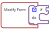
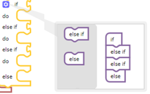
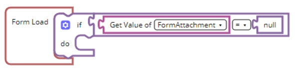

The Logic blocks enable you to define any conditional logic. You can define the If condition to validate if the condition passes or the Boolean condition to define if a condition is true or false.
If Block
The If block has two connectors: one input and one output. The condition is specified under the if entry point and the action if the condition passes is specified under the do entry point.Figure 1.

The If block has multiple additional options to define multiple conditions. You can click to add any level of conditions by dragging either the else or else if block under the If block.

The else or else if blocks are used only for multiple conditions. For example, if you need to check the logged in user, you can set the conditions as follows:
if the logged in user role is Contractor, then hide Amount field,
else if current user role is Consultant , then set the Amount field to Read-only, and
if the current user role is Project Manager, then set the Amount field to Mandatory.
If all the above conditions fail, you can also use a generic fail-safe else condition.
Boolean Block
The output of a Boolean block is always either true or false, irrespective of which block you choose. There are five types of Boolean blocks:
Simple Boolean block
Dual-check Boolean block
Not block
True/False block
Null block
Simple Boolean Block
The Simple Boolean block enables you to define comparators in the conditions block. For example, if you want to check the logged in user role of Contractor, then a simple Boolean block must be used and connected to the If block.Figure 2.
The first entry of the condition check is a data operation block to check the role of the logged in user, and the second entry is a text field where you type Contractor.
The configuration of this scenario is illustrated in the following image:Figure 3.
Dual-check Boolean Block
The Dual-check Boolean block is the next block in the Boolean condition category. This block has two slots that enable you to check both the conditions.Figure 4.
For example, if you want to check if the logged in user belongs to the Contractor role and the current stage is Submitted, then a simple Boolean block is added to each slot.
The configuration of this scenario is illustrated in the following image:Figure 5.
True/False Block
The true or false block enables you to validate if the condition is true or false.
For example, if you want to check if a check box is set to true or false and then execute a condition based on it, you can use the true or false block as required. Figure 6.
Null Block
The null block enables you to check if the information is null and perform appropriate action where information is missing. Figure 7.
